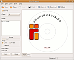
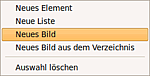

DiscWrapper
Dieser Artikel wurde für die folgenden Ubuntu-Versionen getestet:
Ubuntu 14.04 Trusty Tahr
Zum Verständnis dieses Artikels sind folgende Seiten hilfreich:
DiscWrapper  ist ein Programm zur Erstellung eigener Cover für Slimcase, Jewelcase und DVD-Hüllen. Neben Textinformationen können auch Bilder zur Gestaltung verwendet werden. Das Programm unterstützt auch LightScribe-fähige Brenner, wenn die erforderlichen Bibliotheken auf dem System vorhanden sind.
ist ein Programm zur Erstellung eigener Cover für Slimcase, Jewelcase und DVD-Hüllen. Neben Textinformationen können auch Bilder zur Gestaltung verwendet werden. Das Programm unterstützt auch LightScribe-fähige Brenner, wenn die erforderlichen Bibliotheken auf dem System vorhanden sind.
Installation¶
Das Programm ist nicht in den offiziellen Paketquellen enthalten.
Fremdpaket¶
GetDeb stellt Fremdpakete zur Verfügung.
Hinweis!
Fremdpakete können das System gefährden.
Nach erfolgreicher Installation findet man das Programm bei Ubuntu-Varianten mit einem Anwendungsmenü unter "Grafik -> DiscWrapper".
Kompilieren¶
Für das Kompilieren aus dem Quellcode werden folgende Pakete[2] benötigt:
libwxbase2.8-0
libwxbase2.8-dev
libwxgtk2.8-0
libwxgtk2.8-dev
wx2.8-headers
build-essential
 mit apturl
mit apturl
Paketliste zum Kopieren:
sudo apt-get install libwxbase2.8-0 libwxbase2.8-dev libwxgtk2.8-0 libwxgtk2.8-dev wx2.8-headers build-essential
sudo aptitude install libwxbase2.8-0 libwxbase2.8-dev libwxgtk2.8-0 libwxgtk2.8-dev wx2.8-headers build-essential
Nun den Quellcode von der Projektseite herunterladen, entpacken[3] und kompilieren[4].
Konfiguration¶
 Über "Bearbeiten -> Einstellungen" gelangt man zu den Basiseinstellungen. Neben Schriftart, Schriftfarbe und Vorschauqualität kann die Sprache eingestellt werden. Es lassen sich die bevorzugten Verzeichnisse für den Import und Export von Bilddateien sowie Speicherung der Projekt-Dateien festlegen. Außerdem kann eine Vorauswahl zur "Klasse" der verwendeten Textblöcke getroffen werden (siehe unten bei Elemente), sowie Festlegungen zum den Verzeichnis-Listen.
Bedienung¶
Mit "Neu" wird ein neues Projekt gestartet. Nach der Wahl der gewünschten Verpackung - zur Auswahl stehen  Slimcase, JewelCase, Slim-DVD und DVD-Hülle - sowie der Wahl des Grunddesigns kann man das Cover sowie das Label gestalten.
Slimcase, JewelCase, Slim-DVD und DVD-Hülle - sowie der Wahl des Grunddesigns kann man das Cover sowie das Label gestalten.
Über die Reiter "Vorne", "Innen", "Rückseite" und "Disk" (je nach gewähltem Hüllenformat) wechselt man zwischen den verschiedenen Ansichten.
Im Reiter "Werkzeuge" können die Optionen "Elemente", "Verzeichnis-Listen" oder "Bilder" gewählt werden; im Reiter "Bearbeiten" besteht die Möglichkeit, schnell zwischen den verschiedenen Cover-Teilen ("Nächster Eintrag") umzuschalten (Kürzel Strg + I ).
Elemente¶
Als Elemente werden in DiscWrapper Textblöcke bezeichnet. In der "Disk"-Ansicht lässt sich hier einstellen, ob der Schriftzug im Radius der CD gekrümmt werden soll (Knopf "Krüm(mung)"). Mit dem Knopf darunter lässt sich ein Zusammenhang zwischen Einträgen verschiedener Ansichten herstellen: Elemente, die z.B. sowohl in der "Vorne"- als auch in einer anderen Ansicht ("Disk", "Innen", "Hinten", je nach gewähltem Hüllenformat) mit der selben "Klasse" verwendet werden, können gleichzeitig verändert werden; nur ein Eintrag muss angepasst werden, er wird dann für alle Ansichten automatisch übernommen. Es stehen fünf Klassen zur Verfügung, bei den Vorlagen sind die Einträge "Titel" der Klasse "1", "Jahr" der Klasse "2" zugeordnet. Weitere häufig genutzte Einträge wie Künstler, Genre etc. können bequem über Verwendung weiterer verschiedener Klassen verwendet werden. Die Auswahl "Keine" kann für Einträge genutzt werden, die nur einmal verwendet werden sollen. (Vorsicht: wird statt dessen versehentlich eine bereits verwendete Klasse verwendet, führt das ggf. zu ungewolltem Verändern auch der anderen Elemente der selben Klasse! Als "Standard" in den Einstellungen sollte daher zunächst "Keine" verwendet werden!) Mit den weiteren Knöpfen lässt sich die Absatzformatierung (linksbündig, mittig, rechtsbündig) einstellen. Außerdem können Schriftart und Farbe individuell festgelegt werden.
Verzeichnislisten¶
Hier lassen sich Verzeichnislisten von beliebigen Ordnern sowie K3b-Projekte und Textdateien importieren; es können bis zu drei Listen in einer Ansicht verwendet werden. Mit der Checkbox " Ordner einbeziehen" können die in einem Ordner verwendeten Unterverzeichnisse ein- und ausgeblendet werden, mit "Versteckte Ordner und Dateien anzeigen" lassen sich versteckte Einträge ein- und ausblenden, ebenso kann optional die jeweilige Dateigröße mit ausgegeben werden. So lässt sich schnell ein "Inhaltsverzeichnis" erstellen, wenn alle auf der CD verwendeten Dateien in einem Verzeichnis gespeichert sind. Schön wäre es natürlich, wenn dabei optional die Dateiendungen ausgeblendet werden könnten; das muss momentan noch "von Hand" erledigt werden. Für diese Funktion lassen sich keine "Klassen" festlegen, falls die Listen mehrfach verwendet werden sollten.
Bilddateien¶
 Unterstützt werden .jpg/.jpeg, .png und .bmp-Dateiformate. Die Bilder können über die Maus frei skaliert werden. Mit den "In den Vordergrund"/"In den Hintergrund"-Schaltflächen kann bei übereinander platzierten Bildern festgelegt werden, ob das gerade aktive Element vor oder hinter anderen Bestandteilen des Entwurfes liegen soll. Außerdem ist ein komfortables Einpassen von Bildern horizontal/vertikal per Knopfdruck möglich.
Diese Funktionen sind im aktuellen Cover auch im Kontextmenü über  (rechte Maustaste) zu erreichen; zusätzlich lassen sich Bilder aus dem "Bilderverzeichnis" importieren; standardmäßig sind dort einige Grafik-Vorlagen gespeichert; es lassen sich auch weitere Dateien ablegen, auf die über diese Funktion leicht zugegriffen werden kann.
(rechte Maustaste) zu erreichen; zusätzlich lassen sich Bilder aus dem "Bilderverzeichnis" importieren; standardmäßig sind dort einige Grafik-Vorlagen gespeichert; es lassen sich auch weitere Dateien ablegen, auf die über diese Funktion leicht zugegriffen werden kann.
Ausdruck¶
bringt das Werk auf Papier; dabei werden für die CD-Hüllen die Ansichten "Vorne" und "Innen" zusammenhängend auf einem Blatt ausgedruckt. Ab Version 1.1.2 ist der Ausdruck der CD-Label auf bedruckbaren Rohlingen auch praktisch möglich; die Position des Ausdrucks lässt sich horizontal wie vertikal pixelweise anpassen. Leider muss die exakte Position für den jeweiligen Drucker meist selbst herausgefunden werden; Anhaltspunkte liefert die Druckvorschau, die mit dem CD-Tray des Druckers verglichen werden kann. Der Entwickler des Programms möchte eine Datenbank für verschiedenen Druckermodelle anlegen; wer also eine exakte Position für seinen Drucker gefunden hat, ist gebeten, die ~/.discwrapper/printermodels0-Datei mit Angabe des Druckermodells an die im Disk-Druck-Dialog angegebene E-Mail-Adresse zu senden oder in diesem Thread in den ubuntuforums.com mitzuteilen. Die Werte sollen dann in weiteren Versionen im Dropdown-Menü des Dialoges als Auswahl anderen Benutzern zur Verfügung stehen.
Beidseitiger Druck¶
Da die Ausdrucke auf dem Blatt zentriert erfolgen (auf richtige Papiergrößenauswahl achten!) lassen sich die Cover/Inlays auch von der Rückseite exakt passend bedrucken. Um beispielsweise ein Booklet wieder in der richtigen Reihenfolge zu bedrucken, müssen mehrere "Projekte" mit jeweils der Vorder- und Innenseite erstellt werden. Die Reihenfolge der Drucke ist etwas schwierig umzusetzen, daher ein Tabelle zur Veranschaulichung. Der erstellte Druck wird mit der bedruckten Seite nach hinten wieder in den Druckereinzug gelegt (dabei aber nicht drehen!). Siehe auch Broschürendruck.
| Rückseiten bedrucken | ||||||||||||||||
| Seitenzahl | 4-seitig | 8-seitig | 12-seitig | 16-seitig | 20-seitig | |||||||||||
| Vorderseite vorne | 1 | 1 | 3 | 1 | 3 | 5 | 1 | 3 | 5 | 7 | 1 | 3 | 5 | 7 | 9 | |
| Vorderseite innen | 4 | 8 | 6 | 12 | 10 | 8 | 16 | 14 | 12 | 10 | 20 | 18 | 16 | 14 | 12 | |
| Hinterseite vorne | 3 | 7 | 5 | 11 | 9 | 7 | 15 | 13 | 11 | 9 | 19 | 17 | 15 | 13 | 11 | |
| Hinterseite innen | 2 | 2 | 4 | 2 | 4 | 6 | 2 | 4 | 6 | 8 | 2 | 4 | 6 | 8 | 10 | |
Inneren CD-Druckbereich einstellen¶
Es ist auch die Größe des nicht bedruckbaren inneren Bereichs einstellbar. Der im Disk-Druck-Dialog voreingestellte Standardwert (612 pixel) führt dazu, dass CDs bis zum Innenloch bedruckt werden (vorausgesetzt, der Drucker unterstützt das). Verkleinerung des Wertes führt zur Vergrößerung des nicht bedruckten Bereichs in der Mitte der Disk. Standard-CDs benötigen eine Größeneinstellung von ca. 496 pixel; das variiert allerdings je nach verwendetem Rohling-Fabrikat.
Ausdruck¶
Die Label können ansonsten auch als Bilddatei exportiert und beispielsweise über das Zeichenprogramm von LibreOffice bzw. OpenOffice oder mit GIMP ausgedruckt werden.
Falls die in den Standard-Vorlagen verwendeten Einträge <Titel> und <Datum> nicht verändert oder gelöscht werden (es bleibt ggf. ein <leer> zurück), bleiben sie sowohl beim Export als auch beim Ausdruck unsichtbar, sie werden nur in der Vorschau angezeigt. Es lässt sich also problemlos z.B. auch ein als Bilddatei vorliegendes Cover verwenden (dazu bei der Auswahl des Hüllenformats die obere Vorlage wählen).
Verwendung von LightScribe¶
Alternativ kann – entsprechende Hard- und Software vorausgesetzt – LightScribe zum Beschreiben geeigneter CD-Rohlinge verwendet werden. Um LightScribe einsetzen zu können, muss zum einen die Software installiert sein, zum anderen das Programm LaCie LightScribe Labeler für Linux. Daraufhin wird im Druckdialog für die CD abgefragt, ob LightScribe verwendet werden soll; das Programm öffnet dann 4L. Der CD-Entwurf muss dort ggf. auf die richtige Größe skaliert werden und kann dann auf den Rohling gebrannt werden. Da sich der Laser in optischen Laufwerken unterhalb der Schublade befindet, müssen Rohlinge also ausnahmsweise "verkehrt" herum (mit der Datenseite nach oben) eingelegt werden.
Export¶
Die Exportfunktion erlaubt es, das Cover oder das CD-Label einzeln in den Formaten .jpg, .png oder .bmp zu speichern. Man erreicht die Funktion über "Datei -> Exportieren...".
Tastenkürzel¶
| DiscWrapper | |
| Taste(n) | Funktion |
| Strg + N | neues Projekt |
| Strg + S | Projekt speichern |
| Strg + O | Projekt öffnen |
| Strg + E | Exportfunktion |
| Strg + Z | Aktion rückgängig machen |
| Strg + Y | Wiederherstellen |
| Strg + I | Nächster Eintrag |
| Alt + F4 | Programm beenden |
Alternativen¶
Brasero Cover Editor - nur Standard (Jewelcase) CD-Hüllen (keine Slimcase) und Tracklisten
kover - Cover-Erstellung unter KDE
disc-cover - Befehlszeilenprogramm zur Erstellung von Covern mit LaTeX und CDDB-Abfrage
Koverartist
- älteres KDE-Programm (in den Paketquellen enthalten)
- Erstellt mit Inyoka
-
 2004 – 2017 ubuntuusers.de • Einige Rechte vorbehalten
2004 – 2017 ubuntuusers.de • Einige Rechte vorbehalten
Lizenz • Kontakt • Datenschutz • Impressum • Serverstatus -
Serverhousing gespendet von